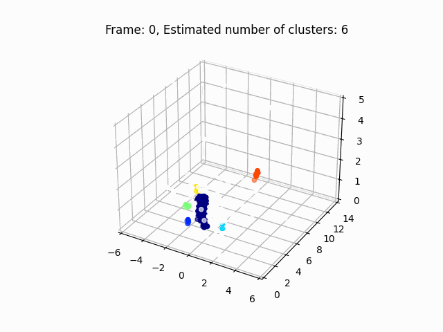
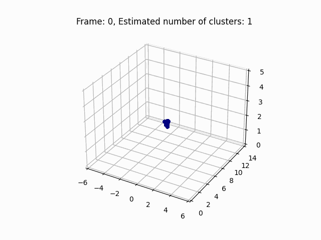

📹 Tracking Comparison — DBSCAN vs EKF-JPDA
Before / after multipath ghost removal — EKF-JPDA tracking in 3D spatial domain rejects ghost targets.
BEFORE DBSCAN only
Ghost targets remain • clusters include multipath reflections
AFTER EKF-JPDA filtered
Clean target tracking • ghosts rejected via JPDA association
⚙️ Preprocessing Pipeline
Raw point clouds → DBSCAN → near-field filter → centroid normalization → random padding.

BEFORE Raw point cloud
Sparse, noisy, contaminated by multipath ghosts

AFTER Preprocessed point cloud
Centroid-normalized • padded to nmax = 1000 • S = {Pt}t=110
📄 Download the Paper
Full manuscript with all experimental details, equations, and results.